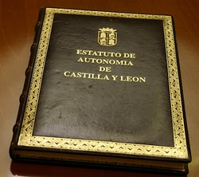
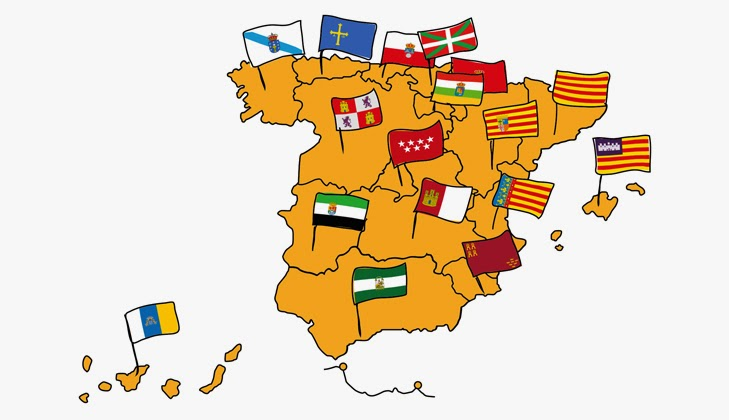

| Etapas | |
|---|---|
| Prehistoria | |
| Edad de los Metales | |
| Edad Antigua | |
| Edad Media | |
| Edad Moderna | |
| Edad Contemporánea | |
| Segunda República, Guerra Civil y franquismo | |
| Antecedentes de la autonomía | |
| Reino de Castilla y León |
La comunidad autónoma de Castilla y León es el resultado de la unión en 1983 de nueve provincias: las tres que, tras la división territorial de 1833, por la que se crearon las provincias, se adscribieron a la Región de León y seis adscritas a Castilla la Vieja, exceptuando en este último caso las provincias de Santander (actual Comunidad Autónoma de Cantabria) y Logroño (actual Comunidad Autónoma de La Rioja).
En el caso de Cantabria se defendió la creación de una comunidad autónoma por motivos históricos, culturales y geográficos, mientras que en La Rioja el proceso resultó más complejo debido a la existencia de tres vías, fundamentadas tanto en motivos históricos como socio-económicos: unión a Castilla y León (UCD), unión a una comunidad vasco-navarra (PSOE, PCE) o creación de una autonomía uniprovincial, opción tomada ante el apoyo mayoritario de su población.
Tras la posguerra que siguió a la Guerra Civil Española (1936-1939), el medio rural de la actual Castilla y León experimentó una pérdida de habitantes como consecuencia de la emigración a las grandes ciudades (Madrid, Barcelona, Bilbao, etc.) o extranjero (Alemania, Francia, Suiza, entre otros). El surgimiento de un potente núcleo industrial en Valladolid, de la mano de la planta de automóviles Renault y del ingeniero Manuel Jiménez Alfaro, empujó industrialmente la región y mitigó la pérdida poblacional. No obstante, la dinámica actual sigue mostrándose preocupante en el conjunto de la comunidad, puesto que las tendencias generales continúan siendo a la despoblación, con la práctica excepción de Valladolid.
En definitiva, en el Estatuto se concretan los perfiles básicos de las regiones, sus principios estructurales y el alcance de sus poderes. Una vez redactado el texto en cada una de las regiones, el Estatuto deberá ser aprobado por las Cortes Generales españolas.
El 1 de junio de 1981 se inició la fase constituyente del documento para Castilla y León. Para ello se creó la correspondiente Asamblea. Algún tiempo después fue aprobado el texto que se convertiría en el Estatuto de la Autonomía en una sesión celebrada en Salamanca, el 27 de junio de ese mismo año.
El documento se remitió al Congreso de los Diputados, pero su aprobación definitiva aún habría de esperar, ya que su tramitación coincidió con la convocatoria de las Elecciones Generales de 1982. Al fin, la aprobación llegó el 25 de febrero de 1983. La provincia de Segovia, que en octubre de 1979 había retirado inicialmente su integración en el proceso autonómico de Castilla y León, acabará incorporándose tras la pertinente tramitación parlamentaria y con la aprobación del proyecto de ley orgánica del 1 de marzo de 1983.
Con posterioridad a su aprobación, el Estatuto de Autonomía de Castilla y León ha tenido tres reformas importantes, fruto de un amplio consenso de las principales fuerzas políticas regionales y nacionales, que equipararon a Castilla y León a las autonomías más avanzadas de España en competencias e instituciones. La primera reforma fue introducida por la Ley Orgánica 11/1994, de 24 de marzo y la segunda por la Ley Orgánica 4/1999, de 8 de enero.
Con la tercera reforma, aprobada el 21 de noviembre de 2007 por las Cortes Generales, Castilla y León ha alcanzado las más altas cotas de autogobierno que permite el actual marco constitucional.
Por Real Decreto-ley 20/1978, de 13 de junio, por el que se aprueba el régimen preautonómico para Castilla y León no se establece un ámbito territorial claramente determinado y delimitado como en los demás. En un primer momento define un ámbito potencial de la actuación de la Institución Preautonómica sobre la base de las nueve provincias que actualmente conforman la Comunidad a las que se unen La Rioja y Cantabria. La decisión de constituir una Comunidad Autónoma no es sin embargo todavía definitiva en este momento como se observa en el artículo 2 del Real Decreto Ley, que dice:
"El Consejo General de Castilla y de León tiene personalidad jurídica plena en orden a la realización de los fines que se le encomiendan, en base a la organización de las provincias de Ávila, Burgos, León, Logroño, Palencia, Salamanca, Santander, Segovia, Soria, Valladolid y Zamora. En todo caso ello no prejuzga la futura organización de las once provincias bajo alguna de las modalidades que la Constitución establezca."
Por Acuerdo del Pleno del Consejo General de Castilla y León, de 26 de octubre de 1979, se ejercita la iniciativa autonómica en Castilla y León por la vía del Artículo 143 de la Constitución. No obstante, se alcanza asimismo un acuerdo de todas las fuerzas políticas de carácter provincial de Santander y Logroño con representación parlamentaria para acceder a la Autonomía Uniprovincial de las Comunidades Autónomas de La Rioja y Cantabria, que finalmente no se incorporaron a la Comunidad de Castilla y León.
La Disposición Transitoria Séptima del Estatuto de Autonomía de Castilla y León en su redacción original regulaba la incorporación de provincias limítrofes a la Comunidad de Castilla y León, si bien esta provisión no terminó llevándose a efecto.
La Asamblea de Diputados Nacionales, Senadores y miembros de las Diputaciones Provinciales, en su sesión de 7 de julio de 1982, aprueba el Proyecto de Estatuto de Autonomía de Castilla y León, que es publicado en el Boletín Oficial de las Cortes Generales, de 24 de julio de 1982.
Por Acuerdo de la Mesa del Congreso de los Diputados, publicado en el Boletín Oficial de las Cortes Generales, de 3 de diciembre de 1982, se vuelve a tener por presentado el Proyecto.
Durante su tramitación parlamentaria cabe destacar, por su importancia en la configuración territorial, lo manifestado en el Informe de la Ponencia (Boletín Oficial de las Cortes Generales):
"Con carácter previo al estudio de las enmiendas, debe quedar constancia en el Informe de la manifestación de los representantes del Grupo Parlamentario Popular sobre diversos aspectos del proceso autonómico en la futura Comunidad Autónoma de Castilla y León. Los representantes del Grupo Parlamentario Popular piden que figuren expresamente las siguientes consideraciones:
1.ª El apoyo del Grupo Parlamentario Popular a la petición de los Diputados señores Fraile Poujade y Gila González sobre la provincia de Segovia.
2.ª Los representantes en la Ponencia del Grupo Parlamentario Popular entienden que los acuerdos de la Diputación de León y de los Ayuntamientos de la provincia de Burgos en el sentido de reconsiderar la iniciación del proceso autonómico, debe llevar consigo la suspensión de los trámites parlamentarios del Estatuto de Autonomía de Castilla y León.
Hechas estas manifestaciones, los ponentes que representan al Grupo Parlamentario Socialista dejan expresa constancia de su opinión contraria a lo manifestado por los representantes del Grupo Parlamentario Popular y de que el interés de la región exige la continuación de los trámites parlamentarios del Estatuto de Autonomía de la Comunidad de Castilla y León."
